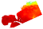

NCTOOLBOX
A Matlab toolbox for working with common data model datasets
Summary:
nctoolbox is a Matlab toolbox that provides read-only access to common data model datasets. Under the hood, nctoolbox uses NetCDF-Java as the data access layer. This allows nctoolbox to access NetCDF, OPeNDAP, HDF5, GRIB, GRIB2, HDF4 and many (15+) other file formats and services using the same API. It works with Matlab 2008a and later.Demos
DEMO9
 --Demonstration of subsetting a CF convention dataset
using 'struct' sytax to access a variable
and it's coordinate axis data.
--Demonstration of subsetting a CF convention dataset
using 'struct' sytax to access a variable
and it's coordinate axis data.DEMO9A
 --Like demo9 but uses 'grid' and 'data' sytax to access a variable and it's coordinate axis data in 2 seperate steps instead of the single call to 'struct' used in demo9a. You may want to do this if you need to subset base on the coordinates of a variable before pulling across a HUGE amount of data.
--Like demo9 but uses 'grid' and 'data' sytax to access a variable and it's coordinate axis data in 2 seperate steps instead of the single call to 'struct' used in demo9a. You may want to do this if you need to subset base on the coordinates of a variable before pulling across a HUGE amount of data.GEODEMO 1A
 --Method A: Read surface salinity using geovariable syntax. Takes some extra steps since you create the geovariable object before extracting data from it, but you then have all the geovariable methods available to you.
--Method A: Read surface salinity using geovariable syntax. Takes some extra steps since you create the geovariable object before extracting data from it, but you then have all the geovariable methods available to you.GEODEMO 1B
 --Method B: Read surface salinity with corner/edge/stride syntax. If you are more used to working with NetCDF in Fortran than in Matlab, this may be the syntax for you.
--Method B: Read surface salinity with corner/edge/stride syntax. If you are more used to working with NetCDF in Fortran than in Matlab, this may be the syntax for you.GEODEMO 1C
 --Method C: Read surface salinity with curly brace syntax: s = nc{'salt'}(1,end,:,:); Most compact general method, but with functionality limited to reading data, obtaining an interoperabily grid structure, and acquiring attributes.
--Method C: Read surface salinity with curly brace syntax: s = nc{'salt'}(1,end,:,:); Most compact general method, but with functionality limited to reading data, obtaining an interoperabily grid structure, and acquiring attributes.GEODEMO 1D
 -- Method D: Read surface salinity using NJ_TSLICE Most compact method for getting data and grid, but limited to entire slices or 3D volumes of data at a particular time step.
-- Method D: Read surface salinity using NJ_TSLICE Most compact method for getting data and grid, but limited to entire slices or 3D volumes of data at a particular time step.GEODEMO 2
 -- Using VSLICEG to create a vertical section from a 3D field.
-- Using VSLICEG to create a vertical section from a 3D field.GEODEMO 3
 -- Using ZSLICEG to create a horizontal section from a 3D field.
-- Using ZSLICEG to create a horizontal section from a 3D field.GEODEMO 4
 -- Compare horizontal slices from two different CF compliant structured grid models (CH3D and ROMS) at a particular time step and depth.
-- Compare horizontal slices from two different CF compliant structured grid models (CH3D and ROMS) at a particular time step and depth.GEODEMO 4B
 -- Compare horizontal slices from two different CF compliant structured grid models (CH3D and ROMS) at a particular time step and depth, using geosubset to subset the data.
-- Compare horizontal slices from two different CF compliant structured grid models (CH3D and ROMS) at a particular time step and depth, using geosubset to subset the data.GEODEMO 6
 -- Extracting a layer of velocity from a C-GRID model like ROMS.
-- Extracting a layer of velocity from a C-GRID model like ROMS.-
TEST CF UGRID3
 -- Compare salinity across three different unstructured grid models.
-- Compare salinity across three different unstructured grid models.